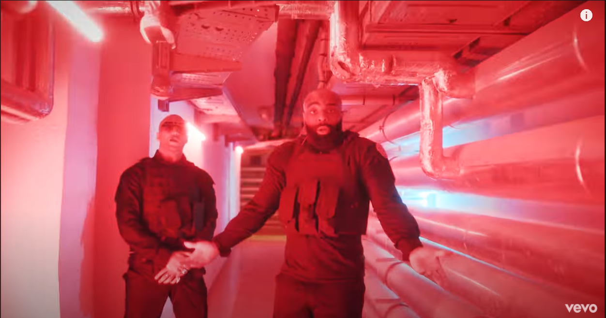

Or Noir

Back to the future K double na-al Hé, hé, hé J'suis le fruit de tes entrailles J'témoigne sur un champ de ruines Comme un épouvantail Qui éloigne les anges du dîn Mama, je vis pas, je meurs pas S'il te plaît, prie pour moi, ne pleure pas J'passe beaucoup de temps sur un grand nombre de petites choses Et tu vois qu'les heures passent Tu m'as dit, "reste près de la cour", avant de racailler, j'ai tété "Fils, ou tu vas finir dans un four à détailler de la cc" Moi j'n'ai jamais écouté l'prof, moi, j'n'ai jamais fait mes devoirs Mama, et si la police me coffre, c'est que t'as eu un bébé noir Et j'ai juré d'être hardcore (2-7) Jusqu'à ma mort Tu m'a dit "petit tu as tort, le monde est rempli de choses que tu ignores" Très souvent les armes y sont Mais le tueur n'y est pas Trop souvent les larmes y sont Mais le cœur n'y est pas Moi j'n'ai qu'ma famille Pas d'amis Des ennemis Et cette mélodie Moi j'n'ai que ma famille Pas d'amis, dans cette chienne de vie Des ennuis, des ennemis Et cette mélodie Cette mélodie Mes cicatrices m'ont ouvert l'âme J'n'ai pas d'attache Entre le ciel et les flammes Mes démons jouent à cache-cache Si j'devais choisir entre tout ce bif et toutes ces bitchs Je prendrais le gros chèque, parce que l'oseille est la plus bonne des schnecks Et j'suis fait d'or noir comme le pétrole Les lumières de la ville sont mes lucioles Sur tous les terrains comme le patrol Peu m'importe tant qu'j'fais le pactole On s'étiole, dans les derniers degrés de l'alcool Rêvant de Cap Canaveral De blanche de Panama avec mes rats dans l'Panamera Et j'n'sais faire que le bandit À des années-lumières de Gandhi J'suis dans ma sphère tandis Que l'univers grandit J'écrase tous les remparts Sombre est ma vérité sans fard Du rap français je m'empare "93" est sur l'étendard Moi j'n'ai qu'ma famille Pas d'amis Des ennemis Et cette mélodie Moi j'n'ai que ma famille Pas d'amis, dans cette chienne de vie Des ennuis, des ennemis Et cette mélodie Cette mélodie J'n'ai qu'ma famille Pas d'amis Des ennemis Et cette mélodie Moi j'n'ai que ma famille Pas d'amis, dans cette chienne de vie Des ennuis, des ennemis Et cette mélodie Cette mélodie
Nautilus

Octo-pute, aqua-pute, cara-pute, hydro-pute, pute, pute
[Alkpote]
J'me suis levé à douze heures, je recherche de la douceur
Deux ou trois pas d'zouker, j'fais pleurer ta chatte chou-fleur
L'Empereur le baroudeur, le partouzeur, ces chiennes me connaissent par cœur (pute)
J'vais pas leur faire de faveur, soixante-cinq centimètres de largeur (woah)
J'pénètre la shnek de ta sœur, je suis le maître-nageur
J'lève le majeur et t'es vert de trouille, sers-toi d'ton glaive avant que le fer ne rouille
Une grosse paire de couilles, plongée sous-marine dans une mer de mouille (splash)
Rolex Submariner avec la loupe Cyclope, sur mes chicots pourries, j'ai mis des clous d'girofle
Je suis posé tranquille devant le fort j'sirote de l'alcool fort, dans ma fonce-dé, je tourbillonne
Assis dans le square, mec, on squatte le hall (hall) avec tous ces anciens qui parlent de taule (taule)
J'ai le même charisme que Charles de Gaulle (Gaulle), j'ai passé l'casting et j'n'ai pas le rôle (pute)
Je dribble tout l'monde et puis, je marque le goal (goal), j'réussirai avant qu'une balle me frôle
Les chattes miaulent et moi, je nage le crawl (pute) dans de la cyprine faite à base de gnôle (splash, splash, splash, splash)
[Alkpote]
Tu reconnais plus l'champion, mec, j'te la mets juste dans l'fion (juste dans l'fion)
Cette pute veut que tous les mois, je lui paie une pension (double pute)
J'suis dans l'aquarium, la fumée reste en suspension (suspension)
La machine est en surtension, j'ai b'soin d'une subvention (pu-pu-pu-pute)
[Alkpote]
C'est nous les méchants, les grands requins blancs, les rois d'l'océan
Le Léviathan avale mes enfants, Poséidon polit mon trident, Moby Dick
Pluie d'cyprine et tsunami, j'suis posé dans l'sous-marin (splash)
Je fuis toutes les zones arides, j'navigue sur des doux vagins (splash, splash)
C'est nous les méchants, les grands requins blancs, les rois d'l'océan
Le Léviathan avale mes enfants, Poséidon polit mon trident, Moby Dick
Pluie d'cyprine et tsunami, j'suis posé dans l'sous-marin
Je fuis toutes les zones arides, j'navigue sur des doux vagins (splash, splash, splash, splash, splash)
[Kaaris]
Ce fils de pute mort en r'gardant vers les cieux, cette pute me suce en m'regardant dans les yeux
J'vise le haut commandement tah la Culiacán, c'est moins cher à la loc' donc j'prends pas l'Huracán (pute)
Ta shnek me fait bander comme le triangle d'or, quand ça bibi des bords, les lions mangent d'abord (pute)
Faux gangster marqué comme un chien tatoué, t'es même pas une salope, t'es juste une chatte à louer (pute)
J'te rafale ton bât', ta-ta-ta-ta, j'suis sous khapta, j'pense qu'au plata, plata
Appuie-tête chauffante, on a pas froid, les jaloux maigrissent sans Anaca3 (ris-Kaa)
J'te vise ton fion, toutes les frappes arrivent à destination, ici-bas, c'est devenu Evil Nation
Faites attention, on sort les armes des cages comme inhumation (2.7, 2.7)
J'm'en fous si ma meuf me trompe avec une autre meuf
J'regarde le spectacle : cette pute twerke avec une seule sse-f'
Tu t'fais jamais péter ? C'est qu'tu taffes avec les keufs (tchoin)
J'reviens sur la scène de crime et j'me barre avec toutes les preuves (tchoin, tchoin, tchoin)
[Alkpote & Kaaris]
C'est nous les méchants (pute), les grands requins blancs, les rois d'l'océan (pute)
Le Léviathan avale mes enfants (pute), Poséidon polit mon trident, Moby Dick
Pluie d'cyprine et tsunami, j'suis posé dans l'sous-marin (splash, pute)
Je fuis toutes les zones arides, j'navigue sur des doux vagins (ALKP.O.T, splash, splash)
C'est nous les méchants, les grands requins blancs, les rois d'l'océan (ris-Kaa)
Le Léviathan avale mes enfants, Poséidon polit mon trident, Moby Dick

Le bouchon de liège est dans ton anus Et je pousse encore avec mon phallus Il était temps que tu traces et t'arrêtes Tu n'as laissé que l'trône et la trace de ta raie J'serai le numéro un, j'en fais le pari Je défonce le rap français depuis l'Atari Depuis 43e BIMA aucune avarie Y a 963 chevaux dans ma 'rari J'suis connu dans toute l'Afrique comme Ipupa Fally Killuminati comme 2Pac à Cali On sort du zoo et on encule Daktari Tu m'suces et j'éjacule sur ta carie 2.7 Z.E.R.O Squad Un double fuck, j'croise les oigts-d Isolation phonique ça sent la chronique Therapy Music, ta chatte est moite J'suis dans la cabine, tu dois me féliciter En séance, tu gaspilles de l'électricité Beaucoup d'envie et de jalousie suscitées Le cul du mouvement que je dois ressusciter Je dégaine plus vite, je dois anticiper Ton règne est fini depuis l'antiquité Rebeu, noi-ch, babtou et gas-ni Je leur nique la keush mais pour la mixité Et je mélange, je mélange, je mélange, je mélange Je mélange, je mélange, je mélange Fuck le smic, fuck le smic, fuck le smic, fuck le smic J'vends de la drogue, fuck les shmitts, faut que je mange Salope, on a assez travaillé pendant l'esclavage Salope, on a assez travaillé pendant l'esclavage Et tu twerk, et tu twerk, et tu twerk Et tu twerk, et tu twerk, et tu twerk, et tu twerk Gros billet sur ton gros cul, ton gros cul, ton gros cul N'est que le face cache de l'iceberg Salope, on a assez travaillé pendant l'esclavage Salope, on a assez travaillé pendant l'esclavage Je ne fais que pousser des hits Tu ne fais que sucer des bites Mon gang est resseré comme dans le PKK Tes fesses sont écartées comme dans un FKK Abidjan, Brazzaville et Dakar Chaud comme les Boko Haram et Fattah J'ai un nouveau Glock avec deux chargeurs Large est le torse dans le débardeur Pour tailler la barbe, faut un sécateur On peut faire une DP sans qu'il y ait deux hardeurs Grosse auto, faut du coco J'suis tout le temps à la pompe à essence Tes potos sont dans le ffre-co Ou tout le temps en convalescence Automatique, une seul fois je presse Trop feignant pour passer les vitesses Je serais le coupable et le complice Mon fils va tirer sur ton fils Mes douilles atterrissent sur la lune Et tes couilles atterrissent dans le presse-agrume, gros Je tombe dans le vide Kalashé comme le guide Le son est tellement lourd qu'il est d'une obésité morbide Moi j'veux des euros, des euros, des euros, des euros J'te parle et c'est déjà trop d'honneur T'as des zéros, des zéros, des zéros, des zéros MC, t'auras jamais le tableau d'honneur Y a des putes, et des putes et des putes et des putes sur le net Ça veut jouer les boycotteurs J'marque des buts, et des buts, et des buts, et des buts, et des buts Avec ou sans vocoder Et je mélange, je mélange, je mélange, je mélange Je mélange, je mélange, je mélange Fuck le smic, fuck le smic, fuck le smic, fuck le smic J'vends de la drogue, fuck les shmitts, faut que je mange Salope, on a assez travaillé pendant l'esclavage Salope, on a assez travaillé pendant l'esclavage Et tu twerk, et tu twerk, et tu twerk Et tu twerk, et tu twerk, et tu twerk, et tu twerk Gros billet sur ton gros cul, ton gros cul, ton gros cul N'est que le face cache de l'iceberg Salope, on a assez travaillé pendant l'esclavage Salope, on a assez travaillé pendant l'esclavage J'suis sur tous les terrains, je suis goal et attaquant En 4-4-2 comme les mancuniens Original, j'fais mal, je ne fais que du sale Et je les baise du premier au 31 J'vais partir pour ne plus voir la nature humaine Je m'arrache comme Ulysse 31 4100, 24, 2-7, 0, 2-0, 31 Ils disent que j'suis plus leur frelon Que j'ai, que j'ai le bras grave long Que depuis j'ai pris le melon Que je veux lécher tous les mamelons Je tire dans le plexus pour les galons Les montagnes surplombent les valons J'suis dans le Lexus comme dans le salon T'as l'utérus sur les talons Glock, barbe grainéen je veux que toute ta filiation décède Et je n'ai même pas encore dégainé, ma réputation précède Je leur crache sur leur crane pour la garniture et je fais un selfie J't'encule ta femme et ta progéniture, telle mère telle fille, pute Et je mélange, je mélange, je mélange, je mélange Je mélange, je mélange, je mélange Fuck le smic, fuck le smic, fuck le smic, fuck le smic J'vends de la drogue, fuck les shmitts, faut que je mange Salope, on a assez travaillé pendant l'esclavage Salope, on a assez travaillé pendant l'esclavage Et tu twerk, et tu twerk, et tu twerk Et tu twerk, et tu twerk, et tu twerk, et tu twerk Gros billet sur ton gros cul, ton gros cul, ton gros cul N'est que le face cache de l'iceberg Salope, on a assez travaillé pendant l'esclavage Salope, on a assez travaillé pendant l'esclavage Salope, on a assez travaillé pendant l'esclavage Et avec la haine, pas avec la rage On a assez travaillé pendant l'esclavage, salope 2-7 2-7